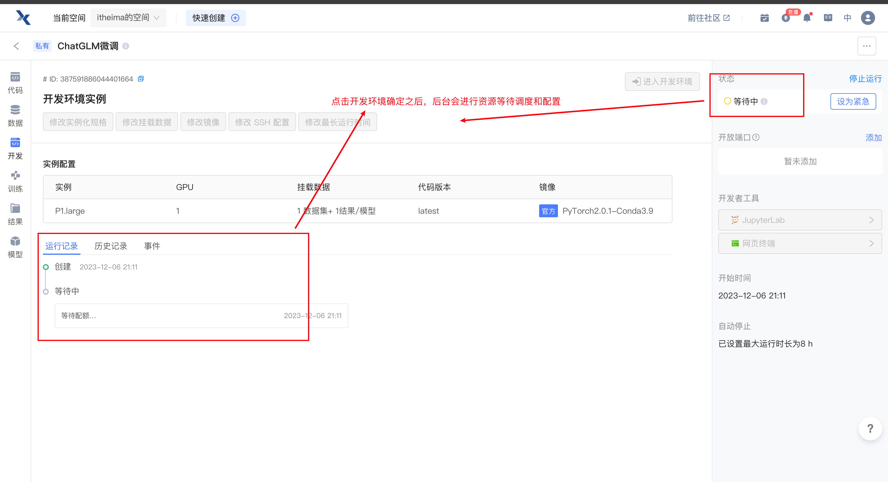

7.4 趋动云使用《扩展》
趋动云使用《补充》¶
一、注册登陆¶
1.1 进入官网地址¶

1.2 手机号注册、登陆¶
1.3 显示登录成功¶
1.4 查看账户信息¶

二、创建项目¶
- 注意我们想要使用趋动云进行模型代码的微调实现，需要创建项目进行运行。但是因为我们使用的数据集和预训练模型都属于本地自己拥有的，所以需要在趋动云上首先「添加数据源」和「添加预训练模型」
2.1 添加数据源¶
2.1.1 选择"数据"工具¶
2.1.2 创建数据¶
2.1.3 配置数据信息¶
2.1.4 选择网页上传方式进行数据传输¶
2.1.5 拖拽本地数据上传¶
2.1.6 数据上传成功展示¶
此时，重新刷新页面，会在数据工具栏显示，已经创建好的数据源
2.2 添加预训练模型¶
2.2.1 选择"模型"工具，创建模型¶

2.2.2 配置模型信息¶
2.2.3 选择SFTP方式进行数据传输¶
- 因为模型文件过大
2.2.4 点击SFTP方式之后, 选择文件传输¶
2.2.5 获取SFTP配置信息¶
2.2.6 使用CMD传输数据(Windows)¶
windows10 最新版及以上版本都支持 CMD 传输数据。
- 输入
win+r键，系统左下角弹出运行框。 - 输入
cmd并回车，进入命令行。 - 去复制 连接字符。
- 在命令行中粘贴 连接字符 并回车。
- 如返回如下信息，则输入
yes。
Are you sure you want to continue connecting (yes/no/[fingerprint])?
- 返回如下信息时，输入 密码 并回车，密码 从上述图片处获取。
roif48iKYp@cluster1-dev4.virtaicloud.com's password:
- 最后返回 sftp 命令行即如下信息时，表示连接成功。
sftp>
- 在 sftp 命令行中输入传输命令。
put -r D:\Git\tool\ /upload
注意：您只需修改命令中 D:\Git\tool\ 为您实际要上传的数据在您本地的存储路径。
2.2.6 使用Mac终端传输数据¶
- 按 Command + 空格 打开搜索栏。
- 搜索栏中输入
终端并回车，打开终端。 - 去复制 连接字符。
- 在命令行中粘贴 连接字符 并回车。
- 如返回如下信息，则输入
yes。
Are you sure you want to continue connecting (yes/no/[fingerprint])?
- 返回如下信息时，输入 密码 并回车，密码 从上述图片处获取。
roif48iKYp@cluster1-dev4.virtaicloud.com's password:
- 最后返回 sftp 命令行即如下信息时，表示连接成功。
sftp>
- 在 sftp 命令行中输入传输命令。
put -r D:\Git\tool\ /upload
注意：您只需修改命令中 D:\Git\tool\ 为您实际要上传的数据在您本地的存储路径。
2.2.7 连接成功上传数据展示¶
注意：当你的模型数据传输完成后，可以关闭通道。
2.3 创建项目¶
2.3.1 点击右上角创建项目¶
2.3.2 依次配置项目内容¶
注意：创建项目后，数据会默认保存的路径为：/gemini/data1下，预训练模型会自动保存在/genmini/pretrain下
2.3.3 镜像环境选择¶
2.3.4 创建完项目后，要求上传本地代码（拖拽式）¶
注意：上传的代码文件，需要进行压缩后上传
2.3.5 项目创建成功展示¶
三、运行服务环境、训练模型¶
3.1 初始化开发环境¶
3.1.1 点击开发工具，进入开发环境实例配置界面¶
3.1.2 进行开发环境实例配置¶
3.1.3 等待资源配置¶

3.1.4 资源配置完成，等待进入开发环境¶
3.2 配置开发环境¶
3.2.1 进入开发环境¶
3.2.2 开发环境展示¶
3.2.3 进入网页终端操作¶
3.2.4 查看代码、数据、预训练模型¶

3.2.5 安装依赖库¶
- 默认安装的有pytorch=2.0.1，并且支持cuda
- 安装其他第三方库
pip install protobuf==3.20.0 transformers==4.27.1 icetk cpm_kernels
pip install peft
3.3 训练模型¶
3.3.1 路径修改¶
- 因为在趋动云服务下，数据、预训练模型、代码的位置都发生了改变，所以要改变相应的引用数据位置
- config文件类的路径修改
- 还需要将train.py，model=model.float()改为model=model.half()，加快模型训练
3.3.2 训练脚本¶
- 命令
python train.py
- 执行结果
- 资源监控
- 耗时
- 1h20min
3.4 模型预测¶
- 注意修改inference.py脚本里模型的路径
- 结果展示
3.5 模型下载本地实现预测¶
3.5.1 SSH配置¶
- 进入 “平台设置” 页面
- 登录平台。
-
下拉右上角账户处，选择 平台设置。
-
点击平台设置
- 在 平台设置 页面的 SSH Key 处，您可管理 密码凭证 和 秘钥凭证（SSH Key）。
注意：需要自己设定用户名和密码、ssh key自动生成即可
- 在具体项目中选择 开发，进入 开发环境实例 页 获取开发环境的 ssh 连接串用于连接开发环境。
- 注意：在修改SSH配置中，选择开启，然后再启动环境
注意只要进入开发环境，就会产生费用，为了节省资源，可以将实例规格进行减配，节省算力
- 启动环境后，出现ssh连接串
3.5.2 终端操作连接云服务¶
- 复制ssh连接串，进行修改
ssh -p 30022 itheima@root@ssh-736af97802ac911f1b7f454489821925.swwutgwduthw@ssh.virtaicloud.com
主机名：ssh.virtaicloud.com
端口号：30022
用户名：itheima@root@ssh-736af97802ac911f1b7f454489821925.swwutgwduthw@
- 获取模型保存路径
/gemini/code/checkpoints/ptune/model_best
- 将模型下载到本地桌面
- 命令
scp -p 30022 -r itheima@root@ssh-736af97802ac911f1b7f454489821925.swwutgwduthw@ssh.virtaicloud.com:/gemini/code/checkpoints/ptune/model_best ~/Desktop